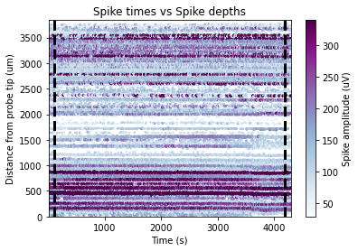

Plot raster across session¶
Example of how to plot scatter plot of spike depths vs spike times with colour and size of scatter points scaled by spike amplitude
[1]:
import numpy as np
from one.api import ONE
from brainbox.ephys_plots import scatter_raster_plot
from brainbox.plot_base import plot_scatter
one = ONE(base_url='https://openalyx.internationalbrainlab.org', silent=True)
eid = '4ecb5d24-f5cc-402c-be28-9d0f7cb14b3a'
probe = 'probe00'
spikes = one.load_object(eid, obj='spikes', collection=f'alf/{probe}')
metrics = one.load_dataset(eid, dataset='clusters.metrics.pqt', collection=f'alf/{probe}')
# Find the clusters that have been labelled as good and their corresponding spike indices
good_clusters = np.where(metrics.label == 1)
spike_idx = np.where(np.isin(spikes['clusters'], good_clusters))[0]
# Also filter for nans in amplitude and depth
kp_idx = spike_idx[np.where(~np.isnan(spikes['depths'][spike_idx])
& ~np.isnan(spikes['amps'][spike_idx]))[0]]
# Get ScatterPlot object
data = scatter_raster_plot(spikes['amps'][kp_idx], spikes['depths'][kp_idx],
spikes['times'][kp_idx])
# Add v lines 10s after start and 10s before end or recording
x1 = np.min(spikes['times'][kp_idx] + 100)
x2 = np.max(spikes['times'][kp_idx] - 100)
data.add_lines(pos=x1, orientation='v', style='dashed', width=3, color='k')
data.add_lines(pos=x2, orientation='v', style='dashed', width=3, color='k')
plot_dict = data.convert2dict()
fig, ax = plot_scatter(plot_dict)
